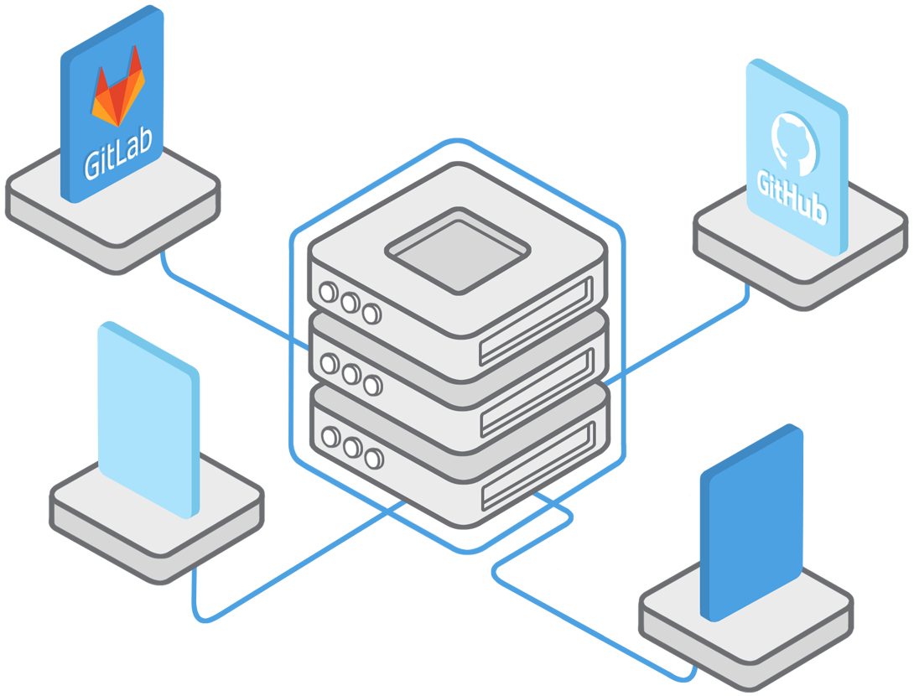

Pay as You Go
Sakku is a PaaS, a real one! If you want, Sakku can automatically change your configuration and match the number of CPU cores and amount of memory to your workload.
70%Save up to 70% of your costs.
Focus on your goal, deploy and develop without worries.
Sakku is a container based cloud platform. You can create containers from your apps and deploy them on Sakku. After that, Sakku will handle all of your application requirements. error control, monitoring, back up and resource management are the most important features of Sakku.
Track resource usage of your application and change the configuration whenever you need.
Manage, modify, and monitor your applications with web panel or Sakku Command Line Interface(CLI).

Select your required number of resources freely. Sakku provides any number of resources you need.

Sakku supports CICD. You can integrate your code in a shared repository and develop it in various environments, while all members of the group are aware of the latest changes.

You can access to your application domain with any valid ports like 8080, 80, 443, etc.

Get back-up from your configurations and go back to them any time you want.
Sakku is a PaaS, a real one! If you want, Sakku can automatically change your configuration and match the number of CPU cores and amount of memory to your workload.
70%Save up to 70% of your costs.
Sakku provides a collaborative platform that let you share your project with others. You can set different access levels for users and revoke their access whenever you want.
You can transfer your application to any valid user account in Sakku.

You can create your application on sakku from any source code repository like GitHub and GitLab, or your local machine. Also, you can use any images from the different registries or just use Sakku images registry.
be the first one that will be aware of launching SAKKU and our special offers.
You can ask your questions from technical supports in theSlack group .

Also, hi@sakku.cloud email responds to your questions.